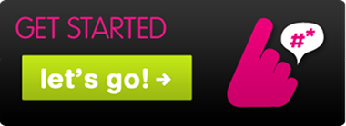

Thimbl is a Manifesto for the Open Web written in code
The most significant challenge the open web will need to overcome is not technical, it is political.
Welcome to Thimbl, the free, open source, distributed micro-blogging platform. If you're weary of corporations hi-jacking your updates to make money, or if being locked in to one micro-blogging platform tires you — well, then Thimbl is for you!
Buzz about #thimbl on Twitter

We're working on it!
Thimbl is currently not ready for the world! We're still putting the finishing touches on what we believe will be a useful and successful application. In the meantime, read more about Thimbl. See what we're up to on the social networks we'd love to get away from. Want to help? Tell us!